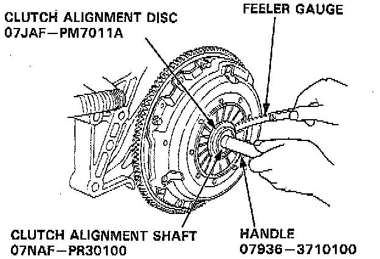
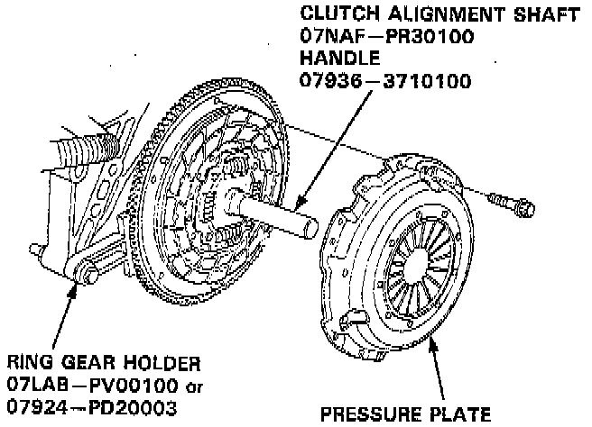
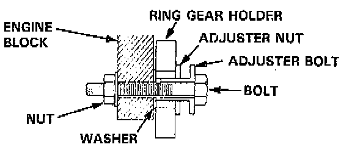
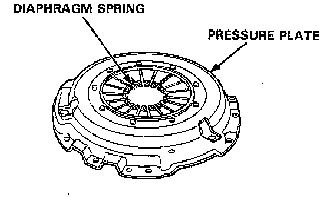

Pressure Plate: Testing and Inspection

1. Check the diaphragm spring fingers for height using the special tools and a feeler gauge.
- Standard (New): 0.6 mm (0.02 inch) Max.
- Service Limit: 0.8 mm (0.03 inch).
- If the height is more than the service limit, replace the pressure plate.
2. Install the special tools.

3. To prevent warping, unscrew the pressure plate mounting bolts in a crisscross pattern in several steps, then remove the pressure plate.
4. Inspect the pressure plate surface for wear, cracks, and burning.

5. Inspect the fingers of the diaphragm spring for wear at the release bearing contact area.

6. Inspect for warpage using a straight edge and feeler gauge.
NOTE: Measure across the pressure plate at three points.
- Standard (New): 0.03 mm (0.001 inch) Max.
- Service Limit: 0.15 mm (0.006 inch).
- If the warpage is more than the service limit, replace the pressure plate.